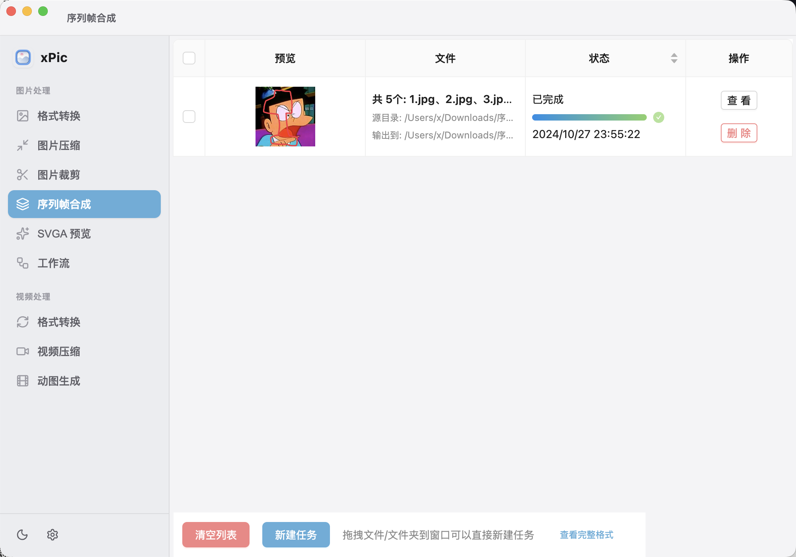

桌面应用 · macOS / Windows
把图片转、压、裁，一个应用搞定
格式转换、批量压缩、裁剪缩放、序列帧合成、SVGA 预览、视频转动图， 还有可编排的工作流。全部本地处理，快、稳、隐私安全。

它能做什么
格式转换
JPG/PNG/WebP/AVIF/HEIC/GIF 等互转，支持动图与批量。
图片压缩
可控质量批量压缩，webp/gif 动图也能压。
图片裁剪
比例 / 自由 / 固定尺寸 / 按目标大小（自动找质量）。
序列帧合成
多张图合成动态 WebP，自定义循环与帧间隔。
SVGA 预览
直接在应用里预览 SVGA 动画。
视频处理
视频格式转换、压缩、转 GIF/WebP/APNG 动图。
工作流
把转换/压缩/裁剪/合成串成一条流水线，一键跑完。
本地 & 隐私
全部在你电脑上处理，文件不上传任何服务器。
下载
正在获取最新版本…
所有安装包来自 GitHub Releases，永远是最新版。macOS 已签名公证；Windows 安装时可自选安装目录。